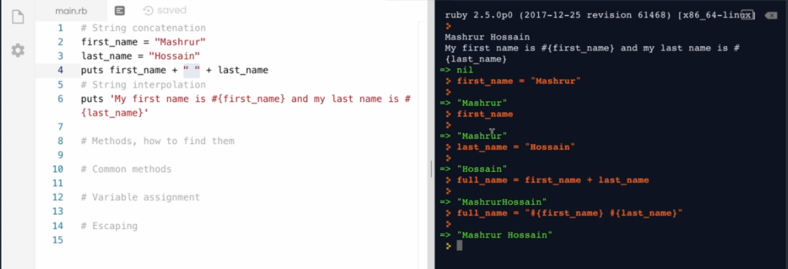

Created miércoles 26 diciembre 2018
Un String es una cadena de Texto entrecomillada.
Ejemplos:
"Mi nombre es Carlos"
String Interpolation vs String Concatenation
Si quiero juntar dos cadenas de texto, debo usar "String concatenation"
first_name ="Carlos"
last_name="Garcia"
puts first_name+" "+last_name
Entonces, para poder incorporar esto en un string debo usar la interpolación
Importante: Si ejecuto, el mismo ejemplo usando el comando con comillas simples, este no funcionará.

Como saber si un metodo es de cierta clasa
full_name = " Algo"
full_name.class
Esto devuelve el tipo de objeto al que pertenece, y como todo en Ruby es un Objeto entonces podemos tener acceso a .class desde diferentes tipos de objetos.
full_name.methods (Muestra todos los metodos que tiene un objeto)
Algunos metodos comunes
10.to_s.class
Output of one is input of another.*
full_name = "Carlos"
full_name.length = 6
full_name.reverse
full_name.capitaliza
full_name.empty?
false
nil.nil?
true
Subtitución de metodos
sentence = "Welcome to the Jungle"
sentence.s"ub("the jungle", "Mactopia")